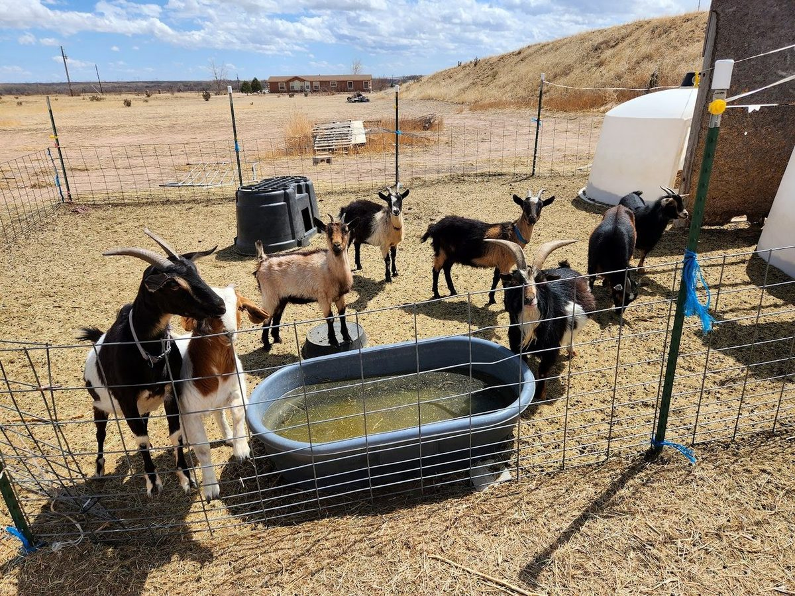

50+ Head Working Goat Herd for Wildfire Fuel Mitigation, Custom-Exempt Meat Shares & Heritage Farm Eggs
Baadlands Farms brings regenerative targeted goat grazing (goatscaping) to HOA open spaces, acreage owners, solar arrays, and steep canyon corridors across Pueblo, Pueblo West, Colorado Springs, Monument, Cañon City, Beulah, Rye, Salida, Walsenburg, Trinidad, and La Junta — clearing Gambel oak, Russian thistle, knapweed, and cheatgrass with zero herbicides.

Targeted Brush & Wildfire Mitigation
- 50+ head working goat herd with portable solar electric paddock fencing
- Clears steep slopes, Gambel oak, noxious weeds & fire ladders without heavy machinery
- Instant online acreage estimate at baadlandsfarms.com/#calculator

Custom-Exempt Meat Shares & Rainbow Eggs
- Pasture-raised goat (cabrito/chevon), heritage pork shares & whole poultry
- Farm-fresh chicken, duck, goose, turkey & guinea eggs collected daily
- Educational 4-H/FFA youth mentorship & private ranch visits in Pueblo County